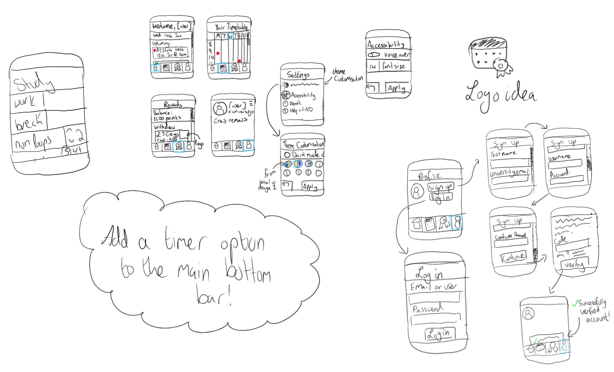
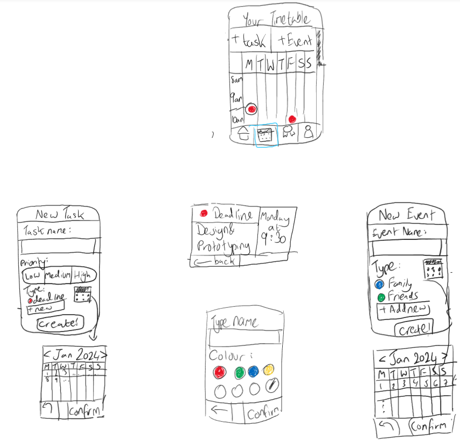
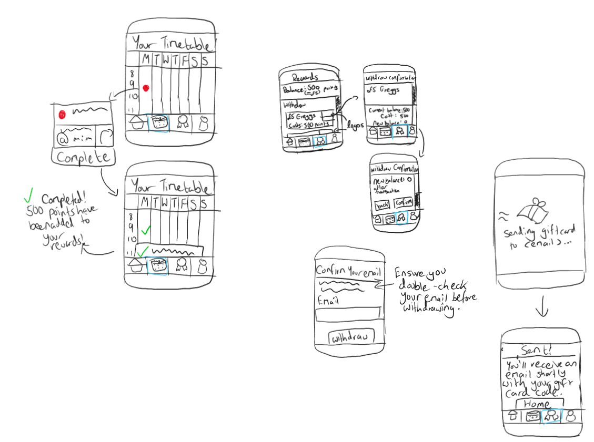
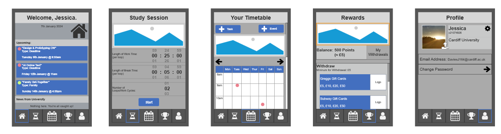

Various User Interface (UI) designs for Timetabling Application
The following images showcase the interface design ideas that I created for an assignment during my third year of university. I was asked to brainstorm and prototype an idea for an app, which would help a target audience with various struggles. For my idea, I decided to go with prototyping a timetabling application for university students who struggle with time management skills.
To begin the UI design process, I drew a few sketches of my idea for the interface so that it accommodates all the features for the app. Below are the sketches for the app's UI design.
Main Page - Design Sketches
This sketch presents a lot of UI ideas for the main pages of the app, as well as functionality and how pages should link to each other. For example, in the bottom right corner of the picture above, it shows the login process, what each page could look like, and the arrows show the order of the pages.
Task Personalisation - Design Sketches
Rewards System - Design Sketches
After drawing some sketches, I decided to use a prototyping software called Axure to turn these sketches into a UI design.
For the colour scheme, I chose blue as the default colour as blue corresponds to calmness, and I wish for users to feel relaxed entering the app. I also added a dark mode option for those who wish for the app to be "easy on the eyes".
Default Colour Scheme

Dark Mode Colour Scheme
If I get any free time, I wish to develop these UI designs into a real timetabling rewards application.